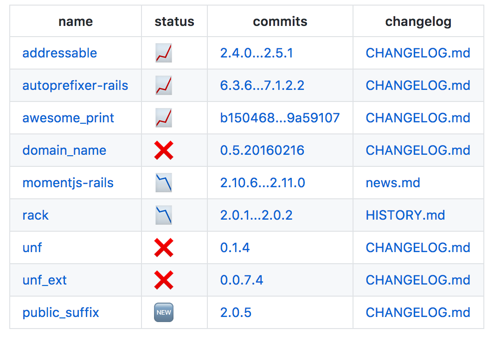

@vividmuimui
2019/09/10
LT 資料
PRのFiles changedにあるGemfile.lockの変更の差分を見て、
CHANGELOG系ファイルへのリンクをPRにコメントするgem
tachikoma や circleci-bundle-update-pr などが作ったPRを対象にして実行される想定
https://github.com/vividmuimui/lock_diff_sample/pull/9#issuecomment-315140796

changelog といっても、リポジトリによって様々な場所に書かれてる
lock_diff はそれらをよしなに探すようになってる
実行に必要なのは 3つ
GITHUB_ACCESS_TOKENvividmuimui/rails_tutorial$ lock_diff \
-r "vividmuimui/lock_diff_sample" \
-n 9 \
--post-comment=false
# 最新のPRを特定して実行する場合( `_for_tachikoma` なのは最初 tachikoma しか想定してなかったから)
$ lock_diff_for_tachikoma \
-r "vividmuimui/lock_diff_sample" \
--post-comment=false
circleci で circleci-bundle-update-pr でセットで動かす用の コンテナが用意されてる
Dependabot で daily でアップデート、
circleci-bundle-update-pr-with-lock-diff で weekly で一括アップデート、
という感じで併用するのも案外良いですよ。
参考: Dependabot vs BundleUpdate+LockDiff
https://vividmuimui.github.io/slides/dependabot_vs_lockdiff/slides/